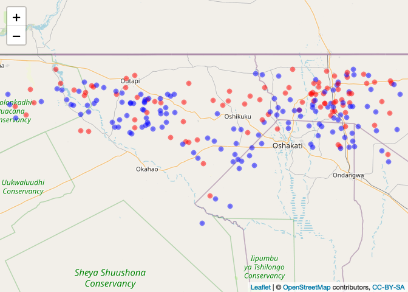
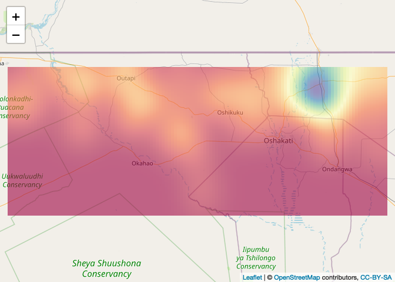
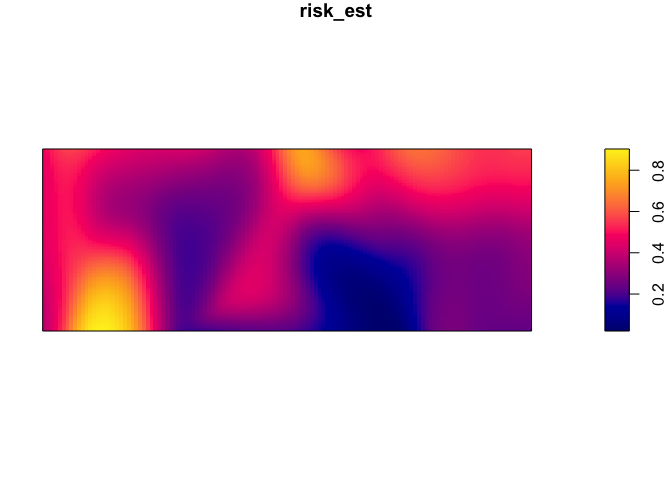
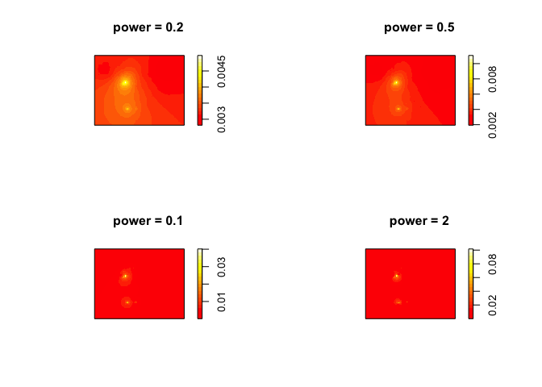
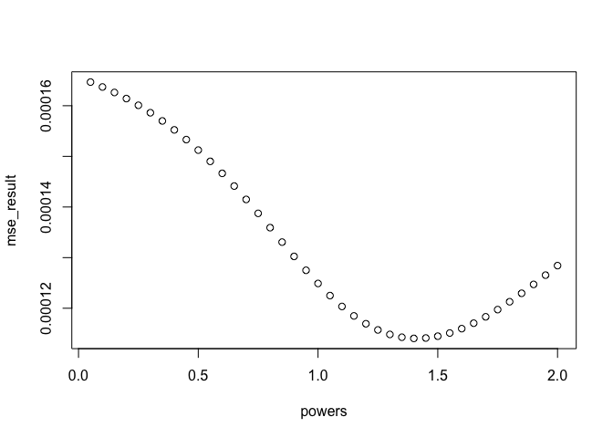
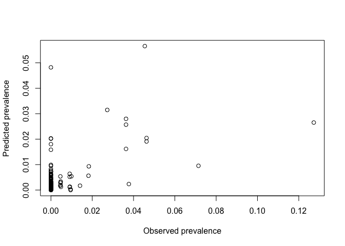
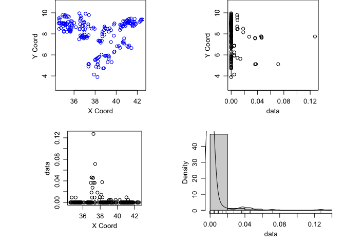
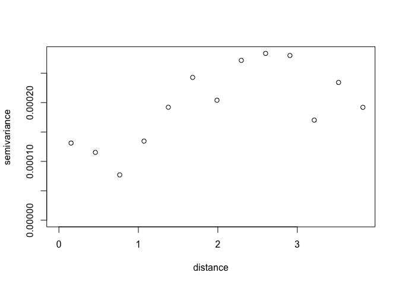
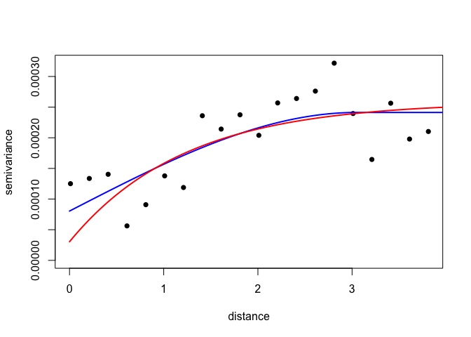

Lab 2 - Spatial variation in risk
This week we are going to explore methods to understand and predict risk across space from point data. These may be point level data (i.e. measurements of something of interest at particular points) or point process data (i.e. occurrences of events in a given area). When you load this week’s libraries, it may prompt you to download XQuartz.
library(Metrics)
library(spatstat)
library(raster)
library(sp)
library(geoR)
library(gtools)
library(lme4)
library(leaflet)
library(oro.nifti)
library(rgdal)
First load up some obfuscated malaria case-control data from Namibia. This is comprised of latitudes and longitudes of cases and controls.
CaseControl<-read.csv("https://raw.githubusercontent.com/phw272c/phw272c.github.io/master/data/CaseControl.csv")
head(CaseControl)
## household_id lat long case
## 1 1 -17.51470 16.05666 1
## 2 2 -17.82175 16.15147 1
## 3 3 -17.78743 15.93465 1
## 4 4 -17.51352 15.83933 1
## 5 5 -17.63668 15.91185 1
## 6 6 -17.64459 16.16105 1
To set ourselves up for further analyses, let’s create objects of just cases and just controls.
#Create a new object with just the cases, recoded as a number 1
Cases<-CaseControl[CaseControl$case==1,]
#Create a new object with just the controls, recoded as a number 0
Controls<-CaseControl[CaseControl$case==0,]
We are also going to create a SpatialPointsDataFrame of the
case-control data
CaseControl_SPDF <- SpatialPointsDataFrame(coords = CaseControl[,c("long", "lat")],
data = CaseControl[,c("household_id", "case")])
And get hold of a boundary file for Namibia.
NAM_Adm0<-raster::getData('GADM',country='NAM',level=0)
## Warning in raster::getData("GADM", country = "NAM", level = 0): getData will be removed in a future version of raster
## . Please use the geodata package instead
Let’s plot and see what we have. First, create a color scheme based on the case classification (0 or 1).
case_color_scheme <- colorNumeric(c("blue", "red"), CaseControl_SPDF$case)
Then, plot
leaflet() %>% addTiles() %>% addCircleMarkers(data=CaseControl_SPDF,
color = case_color_scheme(CaseControl_SPDF$case),
radius = 2)

Risk Mapping using Kernel Density
To generate a kernel density estimate, we first need to generate point pattern object of points (aka ppp). First, we need to define a window defining the population from which the cases arose.
Nam_Owin <- owin(xrange=range(CaseControl$long),yrange=range(CaseControl$lat))
Now we can define the ppp object of the cases.
Cases_ppp <- ppp(Cases$long, Cases$lat, window = Nam_Owin)
plot(Cases_ppp)
We can now generate and plot a kernel density estimate of cases.
par(mar=c(rep(1,4)))
case_density <- density(Cases_ppp)
plot(case_density) # Units are intensity of points per unit square
It’s possible to use different bandwidths. The larger the bandwidth, the
smoother the density estimate. You can also automatically chose a
bandwidth based on a variety of methods. Investigate ?bw.ppl for more
information.
par(mfrow=c(3,1), mar=c(1,1,1,1))
plot(density(Cases_ppp,0.02), main = "Bandwidth 0.02")
plot(density(Cases_ppp,0.1), main = "Bandwidth 0.1")
plot(density(Cases_ppp,bw.ppl), main = "Automatically selected bandwidth") # automatic bandwidth selection based on cross-validation
If you want to map using leaflet, you have to convert the density object to a rasterLayer with a coordinate reference system.
# Create raster
density_raster <- raster(density(Cases_ppp, bw.ppl))
crs(density_raster) <- crs(NAM_Adm0)
# Plot
leaflet() %>% addTiles() %>% addRasterImage(density_raster, opacity=0.6)

But this is just a density of cases, i.e. it doesn’t account for the denominator - the controls. To do this, we can use the Kelsall & Diggle method (see paper in course notes), which calculates the ratio of the density estimate of cases:controls.
First we have to add ‘marks’ to the points. Marks are just values associated with each point such as case or control (1/0).
CaseControl_ppp <- ppp(CaseControl$long, CaseControl$lat,
window = Nam_Owin,
marks=as.factor(CaseControl$case))
Now we can use the relrisk function from the spatstat package to look
at the risk of being a case relative to the background population. In
order to obtain an output of relative risk, we must specify relative =
TRUE in the code line (the probability of being a case, relative to
probability of being a control). If the ‘relative’ argument is not
included in the code line the argument is technically specified as
‘FALSE’ since this is the default and the output is the probability of
being a case. You can set sigma (bandwidth), but the default is to use
cross-validation to find a common bandwidth to use for cases and
controls. See ?bw.relrisk for more details.
par(mar=rep(1,4))
risk_est <- relrisk(CaseControl_ppp)
plot(risk_est)

Obtaining a relative risk of being a case
par(mar=rep(1,4))
rel_risk_est <- relrisk(CaseControl_ppp, relative = TRUE)
plot(rel_risk_est)
To plot on a web map, first specify the projection
risk_raster <- raster(risk_est)
crs(risk_raster) <- crs(NAM_Adm0)
Then define a color palette
pal <- colorNumeric(palette=tim.colors(64), domain=values(risk_raster), na.color = NA)
Then plot with leaflet
leaflet() %>% addTiles("http://{s}.basemaps.cartocdn.com/light_all/{z}/{x}/{y}.png") %>%
addRasterImage(risk_raster, opacity=0.6, col = pal)
<br>{=html} ##
Interpolation of point (prevalence etc.) data First load Ethiopia
malaria prevalence data
ETH_malaria_data <- read.csv("https://raw.githubusercontent.com/phw272c/phw272c.github.io/master/data/mal_data_eth_2009_no_dups.csv",header=T)
Get the Ethiopia Adm 1 level boundary file using the raster package which provides access to GADM data
ETH_Adm_1 <- raster::getData("GADM", country="ETH", level=1)
## Warning in raster::getData("GADM", country = "ETH", level = 1): getData will be removed in a future version of raster
## . Please use the geodata package instead
Inverse distance weighting (IDW)
Inverse distance weighting is one method of interpolation. To perform
IDW using the spatstat package, per kernel density estimates, we have to
create a ppp object with the outcome we wish to interpolate as marks. We
have to start by setting the observation window. In this case, we are
going to use the bounding box around Oromia State from which these data
were collected. To set the window for the ppp function, we need to use
the owin function.
oromia <- ETH_Adm_1[ETH_Adm_1$NAME_1=="Oromia",]
oromia_window <- owin(oromia@bbox[1,], oromia@bbox[2,])
Then define a ppp of the prevalence data
ETH_malaria_data_ppp<-ppp(ETH_malaria_data$longitude,ETH_malaria_data$latitude,
marks=ETH_malaria_data$pf_pr,window=oromia_window)
Set the parameters for displaying multiple plots in one screen and plot different IDW results NB: 1) power represents the power function we want to use 2) ‘at’ can be ‘pixels’ where it generates estimates across a grid of pixels or ‘points’ where it interpolates values at every point using leave-one-out-cross validation
par(mfrow=c(2,2))
plot(idw(ETH_malaria_data_ppp, power=0.2, at="pixels"),col=heat.colors(20), main="power = 0.2")
plot(idw(ETH_malaria_data_ppp, power=0.5, at="pixels"),col=heat.colors(20), main="power = 0.5")
plot(idw(ETH_malaria_data_ppp, power=1, at="pixels"),col=heat.colors(20), main="power = 0.1")
plot(idw(ETH_malaria_data_ppp, power=2, at="pixels"),col=heat.colors(20), main="power = 2")

To calculate the ‘best’ power to use, you can use cross-validation. This is possible using the argument at=points when running the idw function. There is no off the shelf function (that I know of) to do this, so you have to loop through different power values and find the one that produces the lowest error using cross-validation.
powers <- seq(0.05, 2, 0.05)
mse_result <- NULL
for(power in powers){CV_idw <- idw(ETH_malaria_data_ppp, power=power, at="points")
mse_result <- c(mse_result, mse(ETH_malaria_data_ppp$marks,CV_idw))
}
See which produced the lowest error
optimal_power <- powers[which.min(mse_result)]
plot(powers, mse_result)
 Plot observed versus expected with optimal power
CV_idw_opt <- idw(ETH_malaria_data_ppp, power=optimal_power, at="points")
plot(ETH_malaria_data_ppp$marks, CV_idw_opt, xlab="Observed prevalence",
ylab="Predicted prevalence")

Plot using leaflet.
# 1. Convert to a raster
ETH_malaria_data_idw_raster <- raster(idw(ETH_malaria_data_ppp,
power=0.2, at="pixels"))
crs(ETH_malaria_data_idw_raster) <- crs(ETH_Adm_1)
#2. Define a color palette
colPal <- colorNumeric(tim.colors(), ETH_malaria_data_idw_raster[], na.color = NA)
# 3. Plot
leaflet() %>% addTiles() %>% addRasterImage(ETH_malaria_data_idw_raster, col = colPal, opacity=0.7) %>%
addLegend(pal = colPal, values = ETH_malaria_data_idw_raster[])
<br>{=html} ### Kriging
We are going to use the GeoR package to perform kriging. First, we have
to create a geodata object with the package GeoR. This wants dataframe
of x,y and data
ETH_malaria_data_geo <- as.geodata(ETH_malaria_data[,c("longitude","latitude","pf_pr")])
We can plot a summary plot using the lowess option gives us LOWESS curves for the relationship between x and y. LOWESS stands for locally weighted scatterplot smoothing.
plot(ETH_malaria_data_geo, lowess=TRUE)

It’s important to assess whether there is a first order trend in the
data before kriging. We can see from the plots of the prevalence against
the x and y coordinates that there isn’t really any evidence of such a
trend. Were there to be evidence, you can add trend = '1st' or
trend = '2nd' to the plot command to see the result after having
regressed prevalence against x and y using a linear and polynomial
effect respectively.
Now generate and plot a variogram. As a rule of thumb, its a good idea to limit variogram estimation to half the maximum interpoint distance
MaxDist <- max(dist(ETH_malaria_data[,c("longitude","latitude")])) /2
VarioCloud<-variog(ETH_malaria_data_geo, option="cloud", max.dist=MaxDist)
## variog: computing omnidirectional variogram
plot(VarioCloud) # all pairwise comparisons
To make it easier to
interpret, we can bin points by distance. You can specify
option = "bin" but it’s the default so we left it out.
Vario <- variog(ETH_malaria_data_geo, max.dist = MaxDist)
## variog: computing omnidirectional variogram
plot(Vario)

It’s possible to change the way the variogram bins are constructed. Just
be careful not to have too few pairs of points in any distance class.
NB: uvec argument provides values to define the variogram binning
(e.g. let’s try bins of 0.2 decimal degrees, about 22 km).
Vario <- variog(ETH_malaria_data_geo,max.dist=MaxDist,uvec=seq(0.01,MaxDist,0.2))
## variog: computing omnidirectional variogram
Let’s look at the number in each bin
Vario$n
## [1] 85 432 541 586 692 607 652 661 679 663 736 764 711 692 577 585 594 551 630
## [20] 724
What is the minimum? A rule of thumb is 30 in each bin
min(Vario$n)
## [1] 85
Plot
plot(Vario,pch=16)
We can now fit variogram model by minimized least squares using different covariance models. In this case we are just going to use a ‘spherical’ and ‘exponential’ model.
VarioMod_sph<-variofit(Vario, cov.model = "sph")
## variofit: covariance model used is spherical
## variofit: weights used: npairs
## variofit: minimisation function used: optim
## Warning in variofit(Vario, cov.model = "sph"): initial values not provided -
## running the default search
## variofit: searching for best initial value ... selected values:
## sigmasq phi tausq kappa
## initial.value "0" "3.05" "0" "0.5"
## status "est" "est" "est" "fix"
## loss value: 2.28256710551259e-05
VarioMod_exp<-variofit(Vario, cov.model = "exp")
## variofit: covariance model used is exponential
## variofit: weights used: npairs
## variofit: minimisation function used: optim
## Warning in variofit(Vario, cov.model = "exp"): initial values not provided -
## running the default search
## variofit: searching for best initial value ... selected values:
## sigmasq phi tausq kappa
## initial.value "0" "1.22" "0" "0.5"
## status "est" "est" "est" "fix"
## loss value: 2.76112575299845e-05
Plot results
plot(Vario,pch=16)
lines(VarioMod_sph,col="blue",lwd=2)
lines(VarioMod_exp,col="red",lwd=2)

Get summaries of the fits.
summary(VarioMod_sph)
## $pmethod
## [1] "WLS (weighted least squares)"
##
## $cov.model
## [1] "spherical"
##
## $spatial.component
## sigmasq phi
## 0.000160867 3.048000000
##
## $spatial.component.extra
## kappa
## 0.5
##
## $nugget.component
## tausq
## 8.043352e-05
##
## $fix.nugget
## [1] FALSE
##
## $fix.kappa
## [1] TRUE
##
## $practicalRange
## [1] 3.048
##
## $sum.of.squares
## value
## 2.282567e-05
##
## $estimated.pars
## tausq sigmasq phi
## 8.043352e-05 1.608670e-04 3.048000e+00
##
## $weights
## [1] "npairs"
##
## $call
## variofit(vario = Vario, cov.model = "sph")
##
## attr(,"class")
## [1] "summary.variomodel"
summary(VarioMod_exp)
## $pmethod
## [1] "WLS (weighted least squares)"
##
## $cov.model
## [1] "exponential"
##
## $spatial.component
## sigmasq phi
## 0.0002281533 1.2192006253
##
## $spatial.component.extra
## kappa
## 0.5
##
## $nugget.component
## tausq
## 3.042044e-05
##
## $fix.nugget
## [1] FALSE
##
## $fix.kappa
## [1] TRUE
##
## $practicalRange
## [1] 3.652398
##
## $sum.of.squares
## value
## 2.643998e-05
##
## $estimated.pars
## tausq sigmasq phi
## 3.042044e-05 2.281533e-04 1.219201e+00
##
## $weights
## [1] "npairs"
##
## $call
## variofit(vario = Vario, cov.model = "exp")
##
## attr(,"class")
## [1] "summary.variomodel"
In this case, the spherical model has a slightly lower sum of squares, suggesting it provides a better fit to the data.
Now we have a variogram model depicting the covariance between pairs of points as a function of distance between points, we can use it to Krig values at prediction locations. To allow us to compare with IDW, first get grid of points from the IDW example for comparison
# 1. Create prediction grid
IDW <- idw(ETH_malaria_data_ppp, power=0.2, at="pixels")
pred_grid_x <- rep(IDW$xcol,length(IDW$yrow))
pred_grid_y <- sort(rep(IDW$yrow,length(IDW$xcol)))
pred_grid <- cbind(pred_grid_x,pred_grid_y)
# 2. Now krig to those points
KrigPred <- krige.conv(ETH_malaria_data_geo, loc=pred_grid,
krige=krige.control(obj.model=VarioMod_sph))
## krige.conv: model with constant mean
## krige.conv: Kriging performed using global neighbourhood
Visualize predictions.
image(KrigPred,col=heat.colors(50))
If you want to create a raster of your predictions, you can use the
rasterFromXYZ function.
KrigPred_raster <- rasterFromXYZ(data.frame(x=pred_grid_x,
y=pred_grid_y,
z=KrigPred$predict))
plot(KrigPred_raster)
points(ETH_malaria_data[,c("longitude","latitude")],
cex = ETH_malaria_data$pf_pr * 10)
Generating cross-validated predictions in straightforward in geoR using
the
xvlalid
function. Two types of validation are possible: 1. leaving-on-out cross
validation where each data location (all or a subset) is removed in turn
and predicted using the remaining locations, for a given model. 2.
External validation which can predict to locations outside of the
dataset. Here we will use the default leave-one-out cross validation for
all points.
xvalid_result <- xvalid(ETH_malaria_data_geo, model = VarioMod_sph)
## xvalid: number of data locations = 203
## xvalid: number of validation locations = 203
## xvalid: performing cross-validation at location ... 1, 2, 3, 4, 5, 6, 7, 8, 9, 10, 11, 12, 13, 14, 15, 16, 17, 18, 19, 20, 21, 22, 23, 24, 25, 26, 27, 28, 29, 30, 31, 32, 33, 34, 35, 36, 37, 38, 39, 40, 41, 42, 43, 44, 45, 46, 47, 48, 49, 50, 51, 52, 53, 54, 55, 56, 57, 58, 59, 60, 61, 62, 63, 64, 65, 66, 67, 68, 69, 70, 71, 72, 73, 74, 75, 76, 77, 78, 79, 80, 81, 82, 83, 84, 85, 86, 87, 88, 89, 90, 91, 92, 93, 94, 95, 96, 97, 98, 99, 100, 101, 102, 103, 104, 105, 106, 107, 108, 109, 110, 111, 112, 113, 114, 115, 116, 117, 118, 119, 120, 121, 122, 123, 124, 125, 126, 127, 128, 129, 130, 131, 132, 133, 134, 135, 136, 137, 138, 139, 140, 141, 142, 143, 144, 145, 146, 147, 148, 149, 150, 151, 152, 153, 154, 155, 156, 157, 158, 159, 160, 161, 162, 163, 164, 165, 166, 167, 168, 169, 170, 171, 172, 173, 174, 175, 176, 177, 178, 179, 180, 181, 182, 183, 184, 185, 186, 187, 188, 189, 190, 191, 192, 193, 194, 195, 196, 197, 198, 199, 200, 201, 202, 203,
## xvalid: end of cross-validation
# Plot on log odds scale
plot(xvalid_result$data,xvalid_result$predicted, asp=1,
xlab = "Observed prevalence", ylab="Cross-validated predicted prevalence")
abline(0,1)
You might notice that some of the kriged values are <0. Since we are
trying to modeling probabilities this can’t be true. In these
situations, it is possible to apply a transformation to your data before
kriging and then back-transform results. One transformation useful for
probabilities is the logit transform (used in logistic regression). The
logit and inv.logit functions from the package gtools can be used
for this. Note that it doesn’t work if you have 0 values as you can’t
log(0). You can add a small amount to avoid this situation. The process
would look like this.
# Add small amount to avoid zeros
ETH_malaria_data$pf_pr_adj <- ETH_malaria_data$pf_pr + 0.001
# Apply logit transform and convert to geodata
ETH_malaria_data$pf_pr_logit <- logit(ETH_malaria_data$pf_pr_adj)
ETH_malaria_data_geo_logit <- as.geodata(ETH_malaria_data[,c("longitude","latitude","pf_pr_logit")])
# Fit (spherical) variogram
Vario_logit <- variog(ETH_malaria_data_geo_logit, max.dist = MaxDist)
## variog: computing omnidirectional variogram
VarioMod_sph_logit <- variofit(Vario_logit, cov.model = "sph")
## variofit: covariance model used is spherical
## variofit: weights used: npairs
## variofit: minimisation function used: optim
## Warning in variofit(Vario_logit, cov.model = "sph"): initial values not provided
## - running the default search
## variofit: searching for best initial value ... selected values:
## sigmasq phi tausq kappa
## initial.value "1.16" "2.45" "0.15" "0.5"
## status "est" "est" "est" "fix"
## loss value: 448.598010419967
# Get CV kriged predictions
xvalid_result_logit <- xvalid(ETH_malaria_data_geo_logit, model = VarioMod_sph_logit)
## xvalid: number of data locations = 203
## xvalid: number of validation locations = 203
## xvalid: performing cross-validation at location ... 1, 2, 3, 4, 5, 6, 7, 8, 9, 10, 11, 12, 13, 14, 15, 16, 17, 18, 19, 20, 21, 22, 23, 24, 25, 26, 27, 28, 29, 30, 31, 32, 33, 34, 35, 36, 37, 38, 39, 40, 41, 42, 43, 44, 45, 46, 47, 48, 49, 50, 51, 52, 53, 54, 55, 56, 57, 58, 59, 60, 61, 62, 63, 64, 65, 66, 67, 68, 69, 70, 71, 72, 73, 74, 75, 76, 77, 78, 79, 80, 81, 82, 83, 84, 85, 86, 87, 88, 89, 90, 91, 92, 93, 94, 95, 96, 97, 98, 99, 100, 101, 102, 103, 104, 105, 106, 107, 108, 109, 110, 111, 112, 113, 114, 115, 116, 117, 118, 119, 120, 121, 122, 123, 124, 125, 126, 127, 128, 129, 130, 131, 132, 133, 134, 135, 136, 137, 138, 139, 140, 141, 142, 143, 144, 145, 146, 147, 148, 149, 150, 151, 152, 153, 154, 155, 156, 157, 158, 159, 160, 161, 162, 163, 164, 165, 166, 167, 168, 169, 170, 171, 172, 173, 174, 175, 176, 177, 178, 179, 180, 181, 182, 183, 184, 185, 186, 187, 188, 189, 190, 191, 192, 193, 194, 195, 196, 197, 198, 199, 200, 201, 202, 203,
## xvalid: end of cross-validation
xvalid_result_inv_logit <- inv.logit(xvalid_result_logit$predicted)
Pop quiz
- How could you compare how well the best fitting IDW performs versus kriging?
- Which appears to be more accurate?
- Can you visualize where predictions from IDW differ to kriging?
- Does inclusion of a trend surface improve kriging estimates?
Answers here
Key readings
Good overview
Pfeiffer, D., T. P. Robinson, M. Stevenson, K. B. Stevens, D. J. Rogers and A. C. Clements (2008). Spatial analysis in epidemiology, Oxford University Press Oxford. Chapter 6.
Technical paper covering kernel estimation of relative risk. Key reference but not necessary to understand in detail.
Kelsall, Julia E., and Peter J. Diggle. “Kernel estimation of relative risk.” Bernoulli 1.1-2 (1995): 3-16.
Illustration of the Kelsall Diggle approach used to map sleeping sickness risk
Additional readings
Nice example of kriging applied across space and time
Additional example of Kelsall Diggle in action
Di Salvo, Francesca, et al. ”Spatial variation in mortality risk for hematological malignancies near a petrochemical refinery: A population-based case-control study.” Environmental research 140 (2015): 641-648.